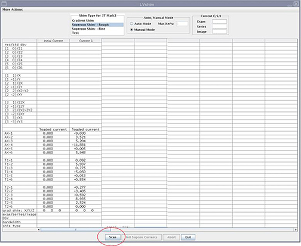

Green cell = Passed spec
Red cell = Failed spec
Illustration 9: Harmonics and Specifications Comparison

| NOTE: | To abort the scan, click the [Abort] button and press the [Stop Scan] button on the control panel. |
Illustration 8: Starting Scan

After the scan is completed, the tool calculates the harmonics, and compares it with the specifications shown in Illustration 9.
Green cell = Passed spec
Red cell = Failed spec
Illustration 9: Harmonics and Specifications Comparison
The tool calculates the delta currents and the new currents and displays currents in a pop-up window shown in Illustration 10.
Illustration 10: Currents Displayed in Dial In Currents Window